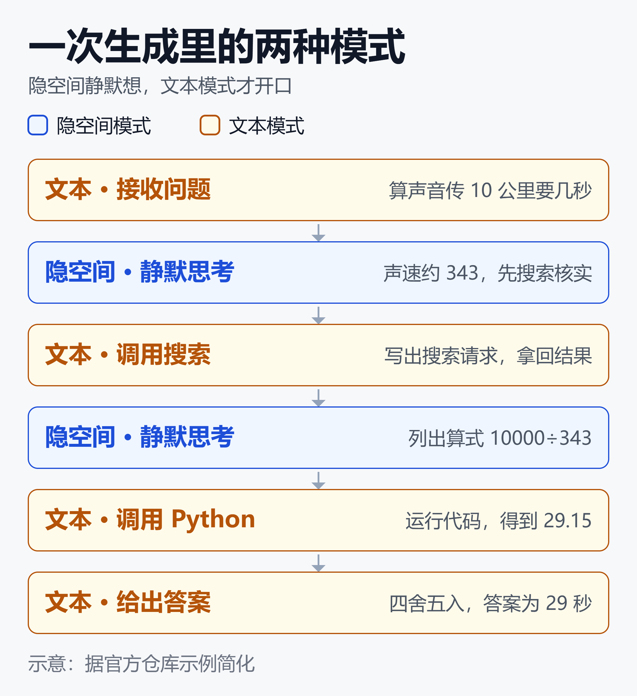
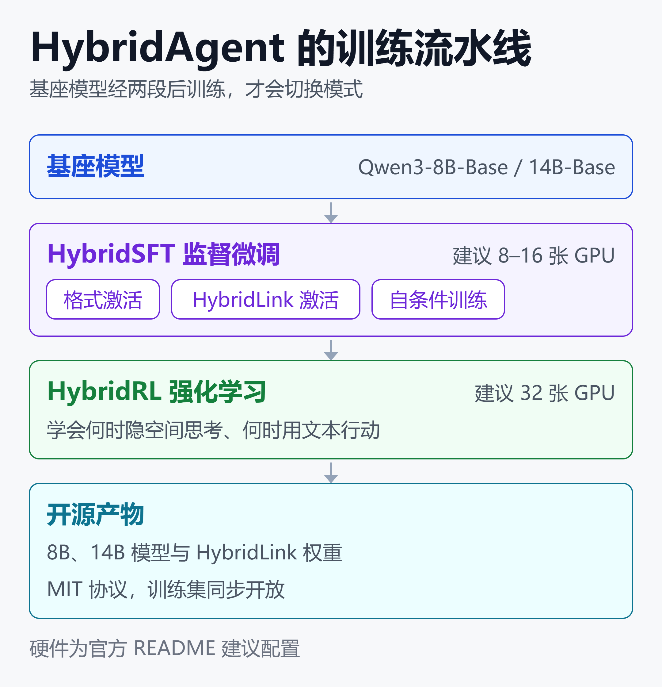

Agent 不必边想边说：HybridAgent 用隐空间推理砍掉近半 Token
35.5% 到 54.7%，这是 HybridAgent 论文自报的 Token 减少幅度。同一组实验里，11 个基准的平均成绩还高了 10.4%，推理速度快 1.8 到 2.6 倍，成本低 2.7 到 3.7 倍（Hugging Face Papers —— Hybrid Reasoning Agents）。
通常的直觉是：推理省了，准确率就要掉。这篇论文给出的是反例：让 Agent 少写文字，反而更快、更准。
它的做法很直接。今天的 LLM Agent 必须把每一步想法写成文字，才能搜索、跑代码或采取行动。HybridAgent 让模型在内部向量里静默思考，只在需要调用工具、给出答案时才切回文字。
论文来自 Stanford、Together AI、UIUC 和 Meta 的研究者，代码、模型和训练数据已经在 GitHub 与 Hugging Face 开源（GitHub —— togethercomputer/HybridAgent）。
本文拆解它的机制、训练方式和自报数据，并重点讨论两个落地问题：省下的 Token 换来了什么代价，以及哪些团队现在值得试。
一、Agent 的 Token 账：每个想法都要付费
一个典型的工具型 Agent，一轮任务要经历这些步骤：
- 写出计划，决定先查什么
- 生成一次搜索或代码调用
- 读完工具返回，写出对结果的理解
- 决定下一步，重复上面的循环
- 最后写出答案
其中只有工具调用和最终答案是“对外”的，其余大量文字只是模型给自己看的中间思考。这些文字都按输出 Token 计费，也都占用生成时间。
学界早就在尝试让模型“不用文字思考”，这一路线叫隐空间推理（latent reasoning）：模型把中间状态留在连续向量里，不逐个解码成词。
它的优点是高效。但论文摘要指出了两个硬伤：纯隐空间推理缺少原生的工具调用能力，思考过程也不透明（Hugging Face Papers —— Hybrid Reasoning Agents）。
而 Agent 恰恰离不开工具，企业场景又离不开审计。HybridAgent 要解决的，正是“既想省文字，又要能用工具、能看过程”。
二、HybridAgent 的机制：一次生成，两种模式
HybridAgent 在同一次生成里，让模型在两种模式间切换：
- 隐空间模式：模型静默思考，不输出词，用于规划、推演和中间计算
- 文本模式：模型输出可读文字，用于工具调用、最终答案和需要外部监控的内容
官方仓库对切换机制的描述是：一个轻量的 HybridLink 模块，把最后一层的隐状态映射回输入嵌入空间。这样模型进入隐空间模式后，可以把自己的“想法”直接当作下一步输入，不必先变成词（GitHub —— togethercomputer/HybridAgent）。

这张图用官方仓库里的一道题做了简化：声音在 20 摄氏度空气中传 10 公里需要几秒。模型先静默想到声速约 343 米每秒，决定搜索核实；拿到结果后继续静默列式，再调用 Python 计算，最后以文本给出 29 秒。
整个过程里，只有搜索请求、代码和答案是文字，中间的思考都在隐空间完成。
工作记忆：跨轮次不丢上下文
多轮 Agent 的难点在于，隐空间的想法不能每轮都丢掉。论文的做法是用模型自己的工作记忆，保存完整的混合上下文：文本、隐空间思考和工具观察都留在里面，跨轮次不被有损压缩。
隐空间思考也能“读”
每段隐空间思考都可以渲染成伪文本。官方示例里，读出的内容大意是“声速约 343 米每秒，先搜索核实”，每段还附有可读度评分，示例中为 0.84 到 0.96。
但这个读出并不完美。示例的英文读出里出现了 “the the”“speed of speed” 这样的重复词，说明伪文本只是对向量的近似翻译。这一点后文在风险部分会再展开。
三、训练：不是即插即用，要做两段后训练
论文作者称任意 LLM 都可以变成 HybridAgent，但前提是完成两段专门的后训练。已有的闭源模型和未经训练的开源模型，都不能直接获得这个能力。

这张图是训练的整体路径：基座模型先做 HybridSFT，再做 HybridRL，最后得到可发布的模型。
HybridSFT：先学会“怎么切换”
HybridSFT 是监督微调阶段，目标是让模型稳定地完成带工具的混合生成，并学会配合 HybridLink。官方仓库把它拆成三步：格式激活、HybridLink 激活和自条件训练。
HybridRL：再学会“何时切换”
HybridRL 是强化学习阶段，目标是学会什么时候该在隐空间思考，什么时候该用文本行动。仓库给出的 RL 数据覆盖两类任务：深度推理（数学）和 Agent 搜索。
开源产物与硬件门槛
官方已发布两个模型：HybridAgent-8B-Agentic 和 HybridAgent-14B-Agentic，基座分别是 Qwen3-8B-Base 和 Qwen3-14B-Base。同时开放了 HybridSFT 的 v1、v2 训练集和 HybridRL 训练集，仓库采用 MIT 协议。
官方给出的建议硬件是：HybridSFT 用 8 到 16 张 GPU，HybridRL 用 32 张 GPU（4 节点，每节点 8 张）。这意味着自己从头复现训练，对多数团队不是小投入；更现实的路径是直接使用已发布的 8B 或 14B 模型。
四、自报数据怎么读
论文在 3 种模型规模、11 个基准上做了评测，基准覆盖数学、科学、医学、搜索和 Agent 推理。对比对象包括前沿 LLM Agent，以及文本类和隐空间类的 Agent 框架。
| 指标 | 论文自报 |
|---|---|
| 平均性能 | 提升 10.4% |
| Token 用量 | 减少 35.5%-54.7% |
| 推理速度 | 快 1.8-2.6 倍 |
| 成本 | 低 2.7-3.7 倍 |
几个具体数字：
- 14B 模型在 Agent 推理任务上，比最强的 Agent 基线高 17.4%
- 在 GAIA 上，14B 得分 52.4，同一个模型用 ARPO 训练成纯文本 Agent 是 43.7
- 14B 比同等的文本 Agent 快 2.1 倍
- 应用到 Qwen3 4B 时，成本降到原来的 1/3.7（GIGAZINE —— Hybrid Reasoning Agents）
以上数字主要来自论文摘要和 daily.dev 对论文与社交媒体讨论的汇总（daily.dev —— HybridAgent from Together AI and Stanford）。
读这组数据时要注意三点：
- 都是作者自报，论文发布仅一周左右，尚未见到独立复现
- 范围值横跨 3 种规模和多个基线，具体到某个模型、某个基线，幅度会不同；成本的计算口径以论文原文为准
- 11 个基准偏向数学、科学、医学、搜索和通用 Agent 推理，未见覆盖企业里常见的长流程、多系统任务，结论能否外推需要自行验证
五、和同类路线比，它站在哪
| 路线 | 思考方式 | 工具调用 |
|---|---|---|
| 纯文本 Agent | 每步写文字 | 原生支持 |
| 纯隐空间推理 | 全程向量 | 缺少原生支持 |
| HybridAgent | 隐空间加文本 | 文本模式调用 |
纯文本 Agent 可读、好监控，但贵且慢。纯隐空间推理快，但不能直接调工具，也看不到过程。HybridAgent 取的是中间位置：思考用隐空间，动作留在文本。
这个方向并不孤单。HRPO 用强化学习做混合隐空间推理，把先前的隐状态通过可学习的门控融入采样出的词（GitHub —— Yueeeeeeee/HRPO）。LatentMAS 则面向多智能体，让 Agent 之间通过各自的工作记忆传递隐空间思考，而不是长篇文字（GitHub —— Gen-Verse/LatentMAS）。
HybridAgent 的区别在于，它同时保留了工具调用和可检查性，直接面向 Agent 场景。
六、风险：省下的 Token 换来了什么
推理层的可审计性变弱
文本 Agent 的思维链虽然啰嗦，但它是可以逐字审查的日志。隐空间思考换成了向量，只能靠伪文本读出，而读出是有损的。
研究者对此一直保持谨慎。一篇 2026 年的分析指出，隐空间思考应当被视为隐藏的计算，而不是隐藏的解释，仅靠解码结果不能证明机制（arXiv —— A Causal-Geometric Analysis of Latent Reasoning Models）。另一篇研究也指出，这类模型因为不用自然语言推理而难以监控（arXiv —— Are Latent Reasoning Models Easily Interpretable?）。
社区反应也印证了这一点。daily.dev 对 Hacker News 讨论的归纳显示，对可审计性和安全的担忧是讨论的主线，对基准和架构本身的技术兴趣则相对积极。
动作层审计不受影响
需要区分两个层面。HybridAgent 的工具调用和最终答案仍是文本，所以“Agent 做了什么”依然完整可记录。变弱的只是“Agent 为什么这样做”。
对合规要求高的场景，这个差别很关键。如果审计要求保留完整的推理过程，隐空间模式就是一个需要单独评估的风险点。
工程与适用范围
- 必须用经过 HybridSFT 和 HybridRL 的模型，不能给现有 API 模型“打补丁”
- 仓库自带混合生成引擎，负责模式切换、工作记忆和并发工具调用；它与 vLLM 等通用推理服务的兼容情况，README 未提及，上线前需自行验证
- 官方仓库内置的工具是 Python 和搜索，更复杂的企业工具链需要自行接入并重新评估
七、谁现在值得试，怎么试
适合先试的团队
- 自己部署开源模型，Agent 的输出 Token 是主要成本
- 任务以搜索、计算、数据查询为主，工具集相对简单
- 对推理过程的审计要求不是强制的，或可以只审计动作层
暂时观望的团队
- 主要使用闭源 API 模型，无法替换基座
- 合规要求保留完整的逐步推理记录
- 任务依赖大量企业内部系统，工具调用复杂
一个低成本的验证路径
官方提供了批量推理脚本，可以直接用已发布的 8B 模型，在自己的问题集上跑一遍：
python -m hybrid_inference.run_batch \
--model togethercomputer/HybridAgent-8B-Agentic \
--input questions.jsonl \
--output outputs/results.jsonl
输出里包含完整的混合轨迹、答案、每段隐空间思考的伪文本读出和工具调用统计。拿同一批问题，对比现有文本 Agent 的成功率、Token 用量和延迟，才能判断论文里的收益在自己的场景里还剩多少。
抽检推理过程时，可以用官方的 Interpretable Latent Mode：
python -m interpretable_latent_mode \
--model togethercomputer/HybridAgent-14B-Agentic \
--question "你的问题" \
--output report.html
它会把隐空间思考以伪文本的形式，和文本推理、工具调用及观察一起渲染成 HTML 报告。
不换模型也能先做的事
如果暂时没有条件换基座，可以先从别的方向降本。端云路由、专用小模型和推理时计算，都是在不重训大模型的前提下压缩成本的路径，见下方相关阅读。
另外，不管用不用隐空间推理，Agent 的动作日志都该记录完整，这是治理的底线。
小结
HybridAgent 的核心主张是：Agent 不必把每个想法都写出来，只需要在对外行动时开口。论文自报的结果显示，这样做 Token 减少 35.5% 到 54.7%，成本低 2.7 到 3.7 倍，平均成绩还提升了 10.4%。
但这些收益有前提：需要两段后训练，目前仅有 8B 和 14B 的开源模型；推理层的可审计性变弱；数据来自作者自报，尚未被独立复现。
对多数团队来说，更稳妥的做法是用已发布的 8B 模型，在自己的任务上做一次对照测试，再决定是否投入。如果审计要求保留完整推理，则先把动作层日志做扎实，等待更多独立验证。
免责声明
本文基于公开论文摘要、官方代码仓库及媒体报道整理，所有性能与成本数据均为论文作者自报，未经独立复现。内容仅供技术参考，不构成采购或投资建议。落地前请以论文原文和官方仓库为准，并在自己的数据和业务场景中验证。
参考来源
- Hugging Face Papers —— Hybrid Reasoning Agents
- arXiv —— Hybrid Reasoning Agents（2610.18861）
- GitHub —— togethercomputer/HybridAgent
- Hugging Face —— HybridAgent 模型与数据集合
- GIGAZINE —— Hybrid Reasoning Agents 报道
- daily.dev —— HybridAgent from Together AI and Stanford
- arXiv —— A Causal-Geometric Analysis of Latent Reasoning Models
- arXiv —— Are Latent Reasoning Models Easily Interpretable?
- GitHub —— Yueeeeeeee/HRPO：Hybrid Latent Reasoning via Reinforcement Learning
- GitHub —— Gen-Verse/LatentMAS：Latent Collaboration in Multi-Agent Systems